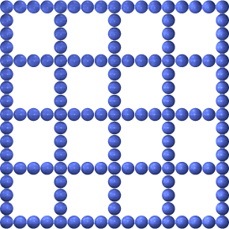
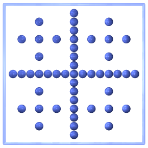
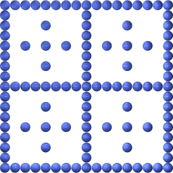
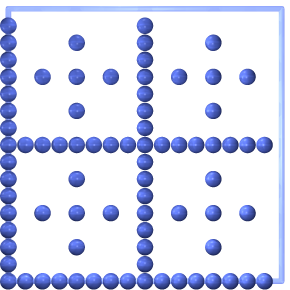
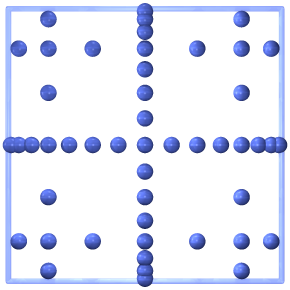
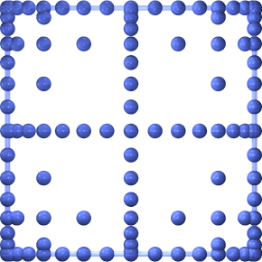

This example is supposed to simply demonstrate the available grid, boundary and basis function types.
First, we include the meta-header sgpp_base.hpp, which includes itself all headers from the base module and set a few parameters.
size_t dim = 2;
size_t polyDegree = 4;
abstract base class for all types grids used in sgpp the class gives pure virtual function definition...
Definition Grid.hpp:191
int main()
Definition densityMultiplication.cpp:22
uint32_t level
Definition multHPX.cpp:26
std::unique_ptr< sgpp::base::Grid > grid(nullptr)
LinearGrid
static Grid * createLinearGrid(size_t dim)
Creates and returns a grid without grid points on the boundary (zero boundary conditions) with piecew...
Definition Grid.cpp:73
LinearBoundaryGrid
static Grid * createLinearBoundaryGrid(size_t dim, level_t boundaryLevel=1)
creates a linear boundary grid
Definition Grid.cpp:77
LinearStretchedGrid
static Grid * createLinearStretchedGrid(size_t dim)
creates a linear stretched grid without boundaries
Definition Grid.cpp:75
LinearStretchedBoundaryGrid
static Grid * createLinearStretchedBoundaryGrid(size_t dim)
creates a linearstretched truncated boundary grid
Definition Grid.cpp:85
WaveletGrid
static Grid * createWaveletGrid(size_t dim)
creates a wavelet grid
Definition Grid.cpp:119
WaveletBoundaryGrid
static Grid * createWaveletBoundaryGrid(size_t dim, level_t boundaryLevel=1)
creates a wavelet trapezoid boundary grid
Definition Grid.cpp:121
SquareRootGrid

static Grid * createSquareRootGrid(size_t dim)
creates a square root grid (h-grid)
Definition Grid.cpp:153
PrewaveletGrid

static Grid * createPrewaveletGrid(size_t dim)
creates a prewavelet grid
Definition Grid.cpp:155
PolyGrid
static Grid * createPolyGrid(size_t dim, size_t degree)
creates a polynomial grid
Definition Grid.cpp:101
PolyBoundaryGrid

static Grid * createPolyBoundaryGrid(size_t dim, size_t degree, level_t boundaryLevel=1)
creates a polynomial grid with truncated boundary
Definition Grid.cpp:103
PeriodicGrid

static Grid * createPeriodicGrid(size_t dim)
creates a periodic grid
Definition Grid.cpp:163
ModWaveletGrid
static Grid * createModWaveletGrid(size_t dim)
creates a modified wavelet grid
Definition Grid.cpp:125
ModPolyGrid
static Grid * createModPolyGrid(size_t dim, size_t degree)
creates a modified polynomial grid
Definition Grid.cpp:161
ModLinearGridStencil
static Grid * createModLinearGridStencil(size_t dim)
creates a stencil for a modified linear grid (without boundaries)
Definition Grid.cpp:71
ModLinearGrid
static Grid * createModLinearGrid(size_t dim)
creates a modified linear grid
Definition Grid.cpp:99
ModFundamentalSplineGrid
static Grid * createModFundamentalSplineGrid(size_t dim, size_t degree)
creates a modified fundamental spline grid
Definition Grid.cpp:149
ModBsplineGrid
static Grid * createModBsplineGrid(size_t dim, size_t degree)
creates a modified B-spline grid
Definition Grid.cpp:137
ModBsplineClenshawCurtisGrid

static Grid * createModBsplineClenshawCurtisGrid(size_t dim, size_t degree)
creates a modified B-spline Clenshaw-Curtis grid
Definition Grid.cpp:141
LinearTruncatedBoundaryGrid
static Grid * createLinearTruncatedBoundaryGrid(size_t dim)
creates a truncated boundary grid=contains all the gridpoints of the fullgrids which have
Definition Grid.cpp:157
LinearGridStencil
static Grid * createLinearGridStencil(size_t dim)
creates a stencil for a linear grid (without boundaries)
Definition Grid.cpp:69
LinearClenshawCurtisGrid

static Grid * createLinearClenshawCurtisGrid(size_t dim)
creates a linear Clenshaw-Curtis grid
Definition Grid.cpp:89
FundamentalSplineGrid
static Grid * createFundamentalSplineGrid(size_t dim, size_t degree)
creates a fundamental spline grid
Definition Grid.cpp:145
BsplineGrid
static Grid * createBsplineGrid(size_t dim, size_t degree)
creates a B-spline grid
Definition Grid.cpp:127
BsplineClenshawCurtisGrid
static Grid * createBsplineClenshawCurtisGrid(size_t dim, size_t degree, level_t boundaryLevel=1)
creates a B-spline Clenshaw-Curtis grid
Definition Grid.cpp:133
BsplineBoundaryGrid
}
static Grid * createBsplineBoundaryGrid(size_t dim, size_t degree, level_t boundaryLevel=1)
creates a B-spline trapezoid boundary grid
Definition Grid.cpp:129